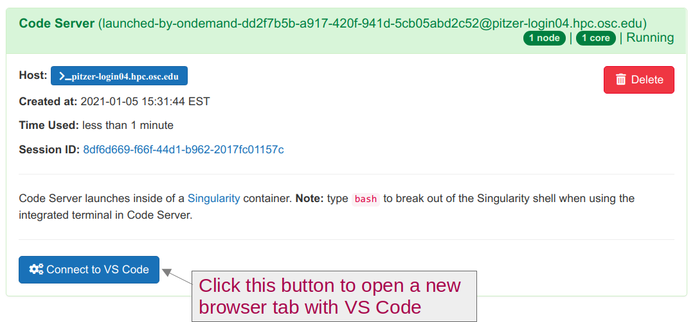

wget https://ftp.ncbi.nlm.nih.gov/genomes/all/GCF/000/001/405/GCF_000001405.40_GRCh38.p14/GCF_000001405.40_GRCh38.p14_genomic.fna.gzGenomic data files
Downloading & exploring FASTQ, FASTA, and GTF files in the shell,
including with grep, cut, sort, and uniq
1 Overview & Getting started
In this session, you’ll be introduced to three very common types of genomic data files, all of which you should have when you start your analysis of, for example, a reference-based RNAseq dataset.
You’ll also learn a number of new shell concepts and commands, such as commands to work with gzip-compressed files, grep to search for text, cut, sort, and uniq to summarize tabular data, and wget to download files from the internet (and the at-home reading describes md5sum to check data integrity, and chmod to make your valuable data read-only).
We’ll talk about the following three types of genomic data file:
- FASTQ files: When you get your sequence data back, it will be in this format, which contains one entry per read, and has per-base quality scores along with the sequence itself.
- FASTA files: Simpler sequence files, where each entry contains just a header and a DNA or protein sequence. Your reference genome assembly will be in this format.
- GTF (& GFF) files: These contain annotations in a tabular format, e.g. the start & stop position of each gene.
You already have some FASTQ files in your practice directory (if not, see the instructions below), but we do not yet have the reference genome FASTA and GFF files and will download those in this session.
Start VS Code and open your folder
As always, we’ll be working in VS Code — if you don’t already have a session open, see below how to do so.
Make sure to open your /fs/ess/PAS0471/<user>/rnaseq_intro dir, either by using the Open Folder menu item, or by clicking on this dir when it appears in the Welcome tab.
Starting VS Code at OSC - with a Terminal (Click to expand)
Log in to OSC’s OnDemand portal at https://ondemand.osc.edu.
In the blue top bar, select
Interactive Appsand then near the bottom of the dropdown menu, clickCode Server.In the form that appears on a new page:
- Select an appropriate OSC project (here:
PAS0471) - For this session, select
/fs/ess/PAS0471as the starting directory - Make sure that
Number of hoursis at least2 - Click
Launch.
- Select an appropriate OSC project (here:
On the next page, once the top bar of the box has turned green and says
Runnning, clickConnect to VS Code.

Open a Terminal by clicking =>
Terminal=>New Terminal. (Or use one of the keyboard shortcuts: Ctrl+` (backtick) or Ctrl+Shift+C.)In the
Welcometab underRecent, you should see your/fs/ess/PAS0471/<user>/rnaseq_introdir listed: click on that to open it. Alternatively, use =>File=>Open Folderto open that dir in VS Code.
Don’t have your own dir with the data? (Click to expand)
If you missed the last session, or deleted your rnaseq_intro dir entirely, run these commands to get a (fresh) copy of all files:
mkdir -p /fs/ess/PAS0471/$USER/rnaseq_intro
cp -r /fs/ess/PAS0471/demo/202307_rnaseq /fs/ess/PAS0471/$USER/rnaseq_introAnd if you do have an rnaseq_intro dir, but you want to start over because you moved or removed some of the files while practicing, then delete the dir before your run the commands above:
rm -r /fs/ess/PAS0471/$USER/rnaseq_introYou should have at least the following files in this dir:
/fs/ess/PAS0471/demo/202307_rnaseq
├── data
│ └── fastq
│ ├── ASPC1_A178V_R1.fastq.gz
│ ├── ASPC1_A178V_R2.fastq.gz
│ ├── ASPC1_G31V_R1.fastq.gz
│ ├── ASPC1_G31V_R2.fastq.gz
│ ├── Miapaca2_A178V_R1.fastq.gz
│ ├── Miapaca2_A178V_R2.fastq.gz
│ ├── Miapaca2_G31V_R1.fastq.gz
│ └── Miapaca2_G31V_R2.fastq.gz
├── metadata
│ └── meta.tsv
└── README.md2 FASTQ, compressed files, & grep
2.1 The FASTQ format
FASTQ is a very common output format of high-throughput sequencing machines — at least from Illumina sequencing, you will almost always receive the sequences in this format. Like most genomic data files, these are plain text files, and each sequence that is read by the sequencer (i.e., each “read”) forms one FASTQ entry represented by four lines. The lines contain, respectively:
- A header that starts with
@and e.g. uniquely identifies the read - The sequence itself
- A
+(plus sign) - One-character quality scores for each base in the sequence

The header line is annotated, with some of the more useful components highlighted in red.
For viewing purposes, this read (at only 56 bp) is shorter than regular Illumina read lengths.
The “Q” in FASTQ stands for “quality”, to contrast this format with FASTA, a more basic and generic format that does not include base quality scores. FASTQ files have the extension .fastq or .fq, but they are very commonly gzip-compressed, in which case their name ends in .fastq.gz or .fq.gz.
Understanding FASTQ quality scores (Click to expand)
The bottom line (starting with JJJJ) in the figure above contains a quality score for each base of the sequence in the second line. Specifically, the characters on that line correspond to a numeric Phred quality score (Q), which is defined as:
Q = -10 * log10(P)
In the equation above, P is the estimated probability that a base call is erroneous — see the table below for some specific probabilities and their rough qualitative interpretation for Illumina data:
| Phred quality score | Error probability | Rough interpretation |
|---|---|---|
| 10 | 1 in 10 | terrible |
| 20 | 1 in 100 | bad |
| 30 | 1 in 1,000 | good |
| 40 | 1 in 10,000 | excellent |
With Illumina data, these Phred quality scores typically go up to 42 (though newer platforms like NovaSeq used binned quality scores). This numeric quality score is represented in FASTQ files not by the number itself, but by a corresponding “ASCII character”, which allows for a single-character representation of each possible score.
As a consequence, each quality score character can conveniently correspond to (i.e., line up with) a base in the sequence: e.g., the 30th base number in a DNA sequence line corresponds to the 30th quality score character two lines below that.
In practice, you almost never have to manually check the quality scores of bases in FASTQ files, but if you do want to know which character corresponds to which quality, this Illumina webpage has a table (though note that Q41 = J and Q42 = K are missing).
Illumina sequencing is by far the most common for RNAseq1, and can be done in two “modes”: single-end and paired-end. With paired-end sequencing, each individual (c)DNA fragment is sequenced from two ends in opposite directions (with the total size of the fragment –“insert size”– determining whether these two reads will overlap). The resulting two, “paired”, reads for each fragment are inextricably linked, with the first called the forward read and the second called the reverse read.
In this example, the insert size is such that the forward and reverse reads do not overlap.
Most commonly for paired-end data, forward and reverse reads are placed in separate files. As such, you’ll usually have two files2 for each sample that was sequenced:
- The file with forward reads has
_R1(or sometimes_1) in its name, e.g.ASPC1_A178V_R1.fastq.gz - The file with reverse reads has
_R2(or sometimes_2) in its name, e.g.ASPC1_A178V_R2.fastq.gz(i.e., the file name should be identical to that for the forward read, except for the read direction identifier).
Because the forward and reverse reads are so tightly linked, R1 and R2 files for one sample should always contain the same number of reads. (It is possible to end up with “orphan” reads, such as after one member of the pair is removed by quality filtering, but these are either discarded or saved in separate files.)
2.2 Looking at compressed (FASTQ) files
Let’s start by reminding ourselves about our own FASTQ files — recall that this is a subset of the full dataset, with way fewer reads reads per file than the originals, and with files for only four of the samples:
ls -lh data/fastqtotal 38M
-rw-r--r-- 1 jelmer PAS0471 4.1M Jul 27 11:53 ASPC1_A178V_R1.fastq.gz
-rw-r--r-- 1 jelmer PAS0471 4.2M Jul 27 11:53 ASPC1_A178V_R2.fastq.gz
-rw-r--r-- 1 jelmer PAS0471 4.1M Jul 27 11:53 ASPC1_G31V_R1.fastq.gz
-rw-r--r-- 1 jelmer PAS0471 4.3M Jul 27 11:53 ASPC1_G31V_R2.fastq.gz
-rw-r--r-- 1 jelmer PAS0471 5.1M Jul 27 11:53 Miapaca2_A178V_R1.fastq.gz
-rw-r--r-- 1 jelmer PAS0471 5.3M Jul 27 11:53 Miapaca2_A178V_R2.fastq.gz
-rw-r--r-- 1 jelmer PAS0471 5.1M Jul 27 11:53 Miapaca2_G31V_R1.fastq.gz
-rw-r--r-- 1 jelmer PAS0471 5.3M Jul 27 11:53 Miapaca2_G31V_R2.fastq.gzThe FASTQ files all have a .gz extension (and should listed in red in your terminal), indicating they are “gzip-compressed”. This is a common type of compression for large genomic files.
Next, we’ll take a peak inside one of these files. It’s worth mentioning that during actual FASTQ file analysis (QC, trimming, alignment), you’re at most very rarely interacting with the raw contents of the file, since bioinformatics programs take care of the details. While it is therefore possible to run your analyis while treating FASTQ (and other genomic) files as “black boxes”, it is helpful to at least have a rough idea of what a FASTQ file looks like, and how you can get some quick stats on them using basic shell commands.
Let’s consider our options to look inside one of these files. cat will print the contents of the entire file to screen, which doesn’t sound like a good idea for such a large file. Other than less, perhaps head will work well here? We’ll try to print 8 lines, which should show us two reads:
head -n 8 data/fastq/ASPC1_A178V_R1.fastq.gz

Ouch, what was that?! What happened here is that we are directly seeing the contents of the compressed file, which is simply not human-readable. Other shell commands, like those that count the number of lines (wc -l), or search for text (grep, see below), would also run into trouble with compressed files3.
To get around all of this, we might be inclined to uncompress these files, which we could do with the gunzip command. However, uncompressed files take up several times as much disk storage space as compressed ones, and this can add up to a lot when we’re talking about FASTQ files in particular. Fortunately, there are other approaches available. First of all, almost any bioinformatics tool will accept compressed FASTQ files. Additionally, the following commands and strategies should help you to do some basic exploration of your FASTQ files without uncompressing them.
Concatenating compressed files (Click to expand)
Like with FASTA files, multiple FASTQ files can simply be concatenated to produce a valid, larger FASTQ file.
It generally doesn’t make sense to concatenate files from different samples, but a relatively common situation in which you might want to concatenate FASTQs is when you have multiple files for each sample, originating from different Illumina “lanes”.
In the previous session, we saw that it is very easy to concatenate files in the shell using cat, even if there are many of them and/or the files are very large.
Concatenating compressed files is also really straightforward — the example below would concatenate two files from different Illumina lanes (L001 and L002), separately for the forward and reverse reads:
# Fictional example; note that we concatenate the R1 and R2 files separately
cat sampleA_L001_R1.fastq.gz sampleA_L002_R1.fastq.gz > sampleA_R1.fastq.gz
cat sampleA_L001_R2.fastq.gz sampleA_L002_R2.fastq.gz > sampleA_R2.fastq.gz2.2.1 less / zless
As you may recall from the previous session, we were actually able to directly view a compressed FASTQ file with less! less also has a zless counterpart that is explicitly meant to display gzip-compressed files, but at least at OSC, less itself will also work:
less data/fastq/ASPC1_A178V_R1.fastq.gz
# (Recall, press 'q' to quit less)
Avoid line-wrapping by
less
Depending on your zoom level and the length of reads in your FASTQ file, some lines may contain too many characters to fit on your screen. If that’s the case, less will by default “wrap” those lines onto the next line on your screen, so characters won’t run off the screen on the right-hand side. That may be useful when the file contains text you’re trying to read in full, but it is often confusing for files like FASTQ as well as for tabular files.
To turn off line-wrapping, call less with the -S option:
less -S data/fastq/ASPC1_A178V_R1.fastq.gz2.2.2 zcat (and grep)
Like the less/zless pair, cat has a counterpart that will print the uncompressed contents of a compressed file: zcat.
Of course, we just established that cat’s behavior of printing all the contents of a file isn’t great for large FASTQ files. But zcat is nevertheless very useful for FASTQ files when we combine it with the pipe, |. For example, we can pipe the output of zcat to the head command to view the first 8 lines (2 reads) as follows:
zcat data/fastq/ASPC1_A178V_R1.fastq.gz | head -n 8@A00195:432:HC7JWDRX3:2:1241:25093:24627 1:N:0:CCGATCGT+GACTGTTT
GAACTAACCAAAGTGTGCTGAACATTATTAGGCTCTCCAGACATGTCTAGTTTATACTGGTAAATGCATATCAATTGTAAATATAAAAATAAAATTTGCAT
+
FFFFFFFFFFFFFFFFFFFFFFFFFFFFFFFFFFFFFFFFFFFFF:FFFFFFFFFFF:FFFFFFFFFFFFFFFF:FFFFFFFFFFFFFFFFF:F:F,F:FF
@A00195:432:HC7JWDRX3:1:1232:30716:27226 1:N:0:CCGATCGT+GACTGTTT
GTCCGGACCTTCTTGACGTAAGTGACATCTGGGTGGTGTTTGGGCGGCATGAGCAGCAGATGCAGCCGCTCATAGAACTGGATCCCGTTAAGGGAGGTGAC
+
FFFFFFFFFFFFFFFFFFFFFFFFFFFFFFFFFFFFFFFFFFFFFFFFFFFFFFFFFFFFFFFFFFFFFFFFFFFFFFFFFFFFFFFFFFFFFFFFFFFFFAlong the same lines, we can count the number of lines in a FASTQ file like so:
zcat data/fastq/ASPC1_A178V_R1.fastq.gz | wc -l400000Your Turn: The number of reads in a FASTQ file
Given the output of the command above, how many reads are in this FASTQ file?
What line count do you get when you run
wc -ldirectly on the compressed file?
Solutions
There are 400,000 / 4 = 100,000 reads in this file
You’ll get a line count of 15,358, quite a ways off from the 400,000 lines in the uncompressed file! So, don’t do this when you want to count lines/reads!
wc -l data/fastq/ASPC1_A178V_R1.fastq.gz 15358 data/fastq/ASPC1_A178V_R1.fastq.gzYour Turn: Getting the read length (advanced)
What is the read length for these FASTQ files? Can you get the answer using the commands we have covered so far?
Two extra pieces of information:
wc -cwill return the number of characters in its input.- Nearly all reads in Illumina FASTQ files have the same length, so you can examine the length of a single read to get your answer.
Hints
Recall that the number of characters in e.g. the second (and the fourth) line of a FASTQ file corresponds to the read length.
Think about how you might be able to use
headandtail, each with the-noption, and back-to-back, to get a single, specific line from a file.String all four commands together in a single line using the pipe
|.
Solution
zcat data/fastq/ASPC1_A178V_R1.fastq.gz | head -n 2 | tail -n 1 | wc -l102You can extract any line from a text file by its line number N using head -n N | tail -n 1: the last line from head’s output will be the line of interest, which you can then isolate with tail -n 1.
One (annoying) little twist here is that wc -c will include the newline “character” in its count: as such, the read length is 102 - 1 = 101.
grep allows you to search a file for any text or text patterns. By default, it will return the entire line whenever it finds a match, and it is often set up (including at OSC) to highlight, within that line, the matching text in bold red in its output.
For example, let’s say we wanted to print the sequences in our FASTQ file that contain “ACCGATACG”:
zcat data/fastq/ASPC1_A178V_R1.fastq.gz | grep "ACCGATACG"
If we wanted to know how many reads contain a certain sequence (e.g, the shorter and therefore more common “CCAGTA”), we can simply pipe grep’s output into wc -l:
zcat data/fastq/ASPC1_A178V_R1.fastq.gz | grep "CCAGTA" | wc -l1118grep has many options — one of those is -c, which will directly count matching lines instead of printing them (i.e., the command below is an alternative to the command above where we piped greps output into wc -l):
zcat data/fastq/ASPC1_A178V_R1.fastq.gz | grep -c "CCAGTA"1118zgrep and other grep options
grep even has a zgrep counterpart for gzip-compressed files, so the above can be further shortened by omitting zcat and passing the FASTQ file name as an argument to zgrep:
zgrep -c "CCAGTA" data/fastq/ASPC1_A178V_R1.fastq.gz1118We could also create a new FASTQ file whose sequences match our search by printing one line before each match (-B1) and two lines after it (-A2):
zgrep -B1 -A2 --no-group-separator "CCAGTA" data/fastq/ASPC1_A178V_R1.fastq.gz > CCAGTA.fastq Among many other options, grep can also search multiple files at once (simply pass multiple filenames as arguments like with other commands, e.g. using a glob pattern to select them), and it can even search directories recursively using the -R flag.
3 Downloading reference genome files
3.1 Finding genome files at NCBI
To analyze our RNAseq data, we’ll need two files related to our reference genome. This is the genome that we will align our reads to, and whose gene annotations will form the basis of the gene counts we’ll eventually get.
Specifically, we’ll need the nucleotide FASTA file with the genome assembly itself, and a GTF file, which is a tabular file with the genomic coordinates and other information for genes and other so-called genomic “features”.
We can download these files from NCBI. For human, many genome assemblies are available on NCBI, but the current reference genome is “GRCh38.p14” (see this overview). There are several ways to download genomes from the NCBI — here, we will keep it simple and directly download just the two files that we need from the FTP site for this genome.
Getting to the FTP site
You can get to this FTP site by clicking on the link for “GRCh38.p14” on the overview page, which will bring you here, then clicking on “View the legacy Assembly page”, which will bring you here, and then clicking on “FTP directory for RefSeq assembly” on the right-hand side of the page.
On the FTP site, we can first right-click on GCF_000001405.40_GRCh38.p14_genomic.fna.gz and then click “Copy link address”. (The URL to this file is also shown in the command box below.)
3.2 Downloading files to OSC with wget
To download a file to OSC, you can’t just open a web browser and download it directly to there. You could download it to your own computer and then transfer it to OSC. A more direct approach is to use a download command in your OSC shell. wget is one command that allows you to download files from the web (curl is another very commonly used one, with much the same functionality).
To download a file to your working directory, you just need to tell wget about the URL (web address) to that file — type “wget”, press Space, and paste the address you copied:
--2023-08-08 13:46:35-- https://ftp.ncbi.nlm.nih.gov/genomes/all/GCF/000/001/405/GCF_000001405.40_GRCh38.p14/GCF_000001405.40_GRCh38.p14_genomic.fna.gz
Resolving ftp.ncbi.nlm.nih.gov (ftp.ncbi.nlm.nih.gov)... 130.14.250.11, 130.14.250.10, 2607:f220:41e:250::12, ...
Connecting to ftp.ncbi.nlm.nih.gov (ftp.ncbi.nlm.nih.gov)|130.14.250.11|:443... connected.
HTTP request sent, awaiting response... 200 OK
Length: 972898531 (928M) [application/x-gzip]
Saving to: ‘GCF_000001405.40_GRCh38.p14_genomic.fna.gz’
65% [============================================================================================> ] 633,806,848 97.7MB/s The wget command is quite chatty, as you can see above, and its output to the screen includes a progress bar for the download.
Next, let’s download one of the annotation files. On the NCBI genome assembly FTP page, both a GFF and a GTF file are available. These are two very similar formats that contain the same data. For our specific analysis workflow, the GTF format is preferred, so we will download the GTF file — right-click on GCF_000001405.40_GRCh38.p14_genomic.gtf.gz and copy the link address.
wget https://ftp.ncbi.nlm.nih.gov/genomes/all/GCF/000/001/405/GCF_000001405.40_GRCh38.p14/GCF_000001405.40_GRCh38.p14_genomic.gtf.gz
# (Command output not shown)Next, let’s see if the files are indeed in our current working dir:
ls -lh # (Output should include:)
-rw-r--r-- 1 jelmer PAS0471 928M Mar 21 10:15 GCF_000001405.40_GRCh38.p14_genomic.fna.gz
-rw-r--r-- 1 jelmer PAS0471 49M Mar 21 10:15 GCF_000001405.40_GRCh38.p14_genomic.gtf.gz3.3 Uncompressing and renaming the genome files
Both the FASTA and the GTF file are gzip-compressed. While it’s preferable to keep FASTQ files compressed (as mentioned above), it’s often more convenient to store your reference genome files as uncompressed files4.
We can uncompress/unzip them simply as follows (notice the subsequent increase in file size in the ls output):
# Will take several seconds, esp. for the first file, and not print output to screen
gunzip GCF_000001405.40_GRCh38.p14_genomic.fna.gz
gunzip GCF_000001405.40_GRCh38.p14_genomic.gtf.gz
ls -lh# (Output should include:)
-rw-r--r-- 1 jelmer PAS0471 3.2G Mar 21 10:15 GCF_000001405.40_GRCh38.p14_genomic.fna
-rw-r--r-- 1 jelmer PAS0471 1.6G Mar 21 10:15 GCF_000001405.40_GRCh38.p14_genomic.gtfWe’ll also want to move these files to a dedicated directory. And while this is not necessary, it will be convenient for our purposes to shorten their file names while retaining the necessary identifying information (the “GCF_” RefSeq number).
After creating a directory, we can move and rename the files at once as follows:
mkdir -p data/ref
mv -v GCF_000001405.40_GRCh38.p14_genomic.fna data/ref/GCF_000001405.40.fna
mv -v GCF_000001405.40_GRCh38.p14_genomic.gtf data/ref/GCF_000001405.40.gtf‘GCF_000001405.40_GRCh38.p14_genomic.fna’ -> ‘data/ref/GCF_000001405.40.fna’
‘GCF_000001405.40_GRCh38.p14_genomic.gtf’ -> ‘data/ref/GCF_000001405.40.gtf’4 FASTA
Our reference genome assembly is stored in the FASTA format, so we’ll learn more about this format and take a look at our own file.
4.1 The FASTA format
The FASTA format is in essence simpler than FASTQ, but it is also less standardized and more generic.
>unique_sequence_ID Optional description (free form!)
ATTCATTAAAGCAGTTTATTGGCTTAATGTACATCAGTGAAATCATAAATGCTAAAAA
>unique_sequence_ID2
ATTCATTAAAGCAGTTTATTGGCTTAATGTACATCAGTGAAATCATAAATGCTAAATGLike FASTQ files, each entry contains a header and the sequence itself, but:
- Header lines start with a
>, and are otherwise basically “free form”, but they usually provide some sort of identifier (and sometimes some metadata) for the sequence in the entry. - There are no quality scores, and there is no
+line. - The sequences can be DNA, RNA, or amino acids.
- Each sequence can represent e.g. a read, a contig/scaffold, a chromosome, or a gene, as well as an aligned sequence with gaps in it.
- Because the individual sequences in a FASTA file can be very long, sequences are often not on a single line, but may be spread across multiple/many lines with some fixed width, say 50 or 80 characters. (As such, line counts are not that informative!)
Generic FASTA file extensions are .fasta and .fa, but also used are extensions that explicitly indicate whether the sequences are nucleotides (.fna, like our downloaded genome assembly file) or amino acids (.faa).
4.2 Exploring our FASTA file
Let’s take a look at the first lines of our reference genome FASTA:
head data/ref/GCF_000001405.40.fna>NC_000001.11 Homo sapiens chromosome 1, GRCh38.p14 Primary Assembly
NNNNNNNNNNNNNNNNNNNNNNNNNNNNNNNNNNNNNNNNNNNNNNNNNNNNNNNNNNNNNNNNNNNNNNNNNNNNNNNN
NNNNNNNNNNNNNNNNNNNNNNNNNNNNNNNNNNNNNNNNNNNNNNNNNNNNNNNNNNNNNNNNNNNNNNNNNNNNNNNN
NNNNNNNNNNNNNNNNNNNNNNNNNNNNNNNNNNNNNNNNNNNNNNNNNNNNNNNNNNNNNNNNNNNNNNNNNNNNNNNN
NNNNNNNNNNNNNNNNNNNNNNNNNNNNNNNNNNNNNNNNNNNNNNNNNNNNNNNNNNNNNNNNNNNNNNNNNNNNNNNN
NNNNNNNNNNNNNNNNNNNNNNNNNNNNNNNNNNNNNNNNNNNNNNNNNNNNNNNNNNNNNNNNNNNNNNNNNNNNNNNN
NNNNNNNNNNNNNNNNNNNNNNNNNNNNNNNNNNNNNNNNNNNNNNNNNNNNNNNNNNNNNNNNNNNNNNNNNNNNNNNN
NNNNNNNNNNNNNNNNNNNNNNNNNNNNNNNNNNNNNNNNNNNNNNNNNNNNNNNNNNNNNNNNNNNNNNNNNNNNNNNN
NNNNNNNNNNNNNNNNNNNNNNNNNNNNNNNNNNNNNNNNNNNNNNNNNNNNNNNNNNNNNNNNNNNNNNNNNNNNNNNN
NNNNNNNNNNNNNNNNNNNNNNNNNNNNNNNNNNNNNNNNNNNNNNNNNNNNNNNNNNNNNNNNNNNNNNNNNNNNNNNNWell … apparently not all bases have been determined: as you probably know, an N represents an unknown base. We can also see that the sequence for each entry is spread across multiple lines, with a line width of 80 characters:
# 'head -n 2 | tail -n 1' prints the second line; 'wc -c' counts characters
head -n 2 data/ref/GCF_000001405.40.fna | tail -n 1 | wc -c81 # 81 - 1 = 80 charactersLet’s take a more extensive look at the file with less:
less data/ref/GCF_000001405.40.fna
# (Remember: press 'q' to quit less)We can also look at all or some of the entry headers by greping for > (which is only allowed in the header) — in this file, these represent the scaffolds:
grep ">" data/ref/GCF_000001405.40.fna | head>NC_000001.11 Homo sapiens chromosome 1, GRCh38.p14 Primary Assembly
>NT_187361.1 Homo sapiens chromosome 1 unlocalized genomic scaffold, GRCh38.p14 Primary Assembly HSCHR1_CTG1_UNLOCALIZED
>NT_187362.1 Homo sapiens chromosome 1 unlocalized genomic scaffold, GRCh38.p14 Primary Assembly HSCHR1_CTG2_UNLOCALIZED
>NT_187363.1 Homo sapiens chromosome 1 unlocalized genomic scaffold, GRCh38.p14 Primary Assembly HSCHR1_CTG3_UNLOCALIZED
>NT_187364.1 Homo sapiens chromosome 1 unlocalized genomic scaffold, GRCh38.p14 Primary Assembly HSCHR1_CTG4_UNLOCALIZED
>NT_187365.1 Homo sapiens chromosome 1 unlocalized genomic scaffold, GRCh38.p14 Primary Assembly HSCHR1_CTG5_UNLOCALIZED
>NT_187366.1 Homo sapiens chromosome 1 unlocalized genomic scaffold, GRCh38.p14 Primary Assembly HSCHR1_CTG6_UNLOCALIZED
>NT_187367.1 Homo sapiens chromosome 1 unlocalized genomic scaffold, GRCh38.p14 Primary Assembly HSCHR1_CTG7_UNLOCALIZED
>NT_187368.1 Homo sapiens chromosome 1 unlocalized genomic scaffold, GRCh38.p14 Primary Assembly HSCHR1_CTG8_UNLOCALIZED
>NT_187369.1 Homo sapiens chromosome 1 unlocalized genomic scaffold, GRCh38.p14 Primary Assembly HSCHR1_CTG9_UNLOCALIZEDFinally, let’s count the number of scaffolds simply by counting the number of lines with a >:
# (This will take several seconds)
grep -c ">" data/ref/GCF_000001405.40.fna705Does this match with what the NCBI website told us?
5 Annotation files (GTF/GFF) & cut/sort/uniq
Our reference genome annotation is stored in the GTF format, so we’ll learn about this format, too, and take a look at our own file.
5.1 The GTF format
The GTF format and the very similar GFF format5 are tabular files, with one row for each individual “genomic feature” (gene, exon, intron, etc.) that has been annotated in the genome, and with columns that contain information like the genomic coordinates of the features.
See the small sample below, with an added header line with column names for clarity:
seqname source feature start end score strand frame attributes
NC_000001 RefSeq gene 11874 14409 . + . gene_id "DDX11L1"; transcript_id ""; db_xref "GeneID:100287102"; db_xref "HGNC:HGNC:37102"; description "DEAD/H-box helicase 11 like 1 (pseudogene)"; gbkey "Gene"; gene "DDX11L1"; gene_biotype "transcribed_pseudogene"; pseudo "true";
NC_000001 RefSeq exon 11874 12227 . + . gene_id "DDX11L1"; transcript_id "NR_046018.2"; db_xref "GeneID:100287102"; gene "DDX11L1"; product "DEAD/H-box helicase 11 like 1 (pseudogene)"; pseudo "true"; Here are some more details on what’s in each column, with the more important/interesting columns in bold:
- seqname — Name of the chromosome, scaffold, or contig
- source — Name of the program that generated this feature, or the data source (e.g. database)
- feature — Name of the feature type, e.g. “gene”, “exon”, “intron”, “CDS”
- start — Start position of the feature (sequence numbering starts at 1; start position is included)
- end — End position of the feature (end position is also included)
- score — A confidence score for the feature, often absent (in which case it is
.) - strand — Whether the feature is on the
+(forward) or-(reverse) strand - frame —
0,1or2(or.for no frame).0means the 1st base of the feature is the 1st base of a codon, etc. - attribute — A semicolon-separated list of tag-value pairs with additional information about each feature.
They also contain a header section, whose lines start with a # and contain some metadata for the file.
Annotation and assembly versions
Because GTF/GFF files contain genomic coordinates, it is essential that the FASTA and GTF/GFF you are working with correspond to the same assembly. For example, if you want to use an updated assembly FASTA for your focal genome, you’re going to need an updated annotation file as well. (On the other hand, it is possible to update just the annotation for the same assembly.)
5.2 Exploring our GTF file
Let’s take a look at the first lines of the file with head, which shows us that there are five header lines, followed by the tabular part of the file:
head data/ref/GCF_000001405.40.gtf#gtf-version 2.2
#!genome-build GRCh38.p14
#!genome-build-accession NCBI_Assembly:GCF_000001405.40
#!annotation-date 03/15/2023
#!annotation-source NCBI RefSeq GCF_000001405.40-RS_2023_03
NC_000001.11 BestRefSeq gene 11874 14409 . + . gene_id "DDX11L1"; transcript_id ""; db_xref "GeneID:100287102"; db_xref "HGNC:HGNC:37102"; description "DEAD/H-box helicase 11 like 1 (pseudogene)"; gbkey "Gene"; gene "DDX11L1"; gene_biotype "transcribed_pseudogene"; pseudo "true";
NC_000001.11 BestRefSeq transcript 11874 14409 . + . gene_id "DDX11L1"; transcript_id "NR_046018.2"; db_xref "GeneID:100287102"; gbkey "misc_RNA"; gene "DDX11L1"; product "DEAD/H-box helicase 11 like 1 (pseudogene)"; pseudo "true"; transcript_biotype "transcript";
NC_000001.11 BestRefSeq exon 11874 12227 . + . gene_id "DDX11L1"; transcript_id "NR_046018.2"; db_xref "GeneID:100287102"; gene "DDX11L1"; product "DEAD/H-box helicase 11 like 1 (pseudogene)"; pseudo "true"; transcript_biotype "transcript"; exon_number "1";
NC_000001.11 BestRefSeq exon 12613 12721 . + . gene_id "DDX11L1"; transcript_id "NR_046018.2"; db_xref "GeneID:100287102"; gene "DDX11L1"; product "DEAD/H-box helicase 11 like 1 (pseudogene)"; pseudo "true"; transcript_biotype "transcript"; exon_number "2";
NC_000001.11 BestRefSeq exon 13221 14409 . + . gene_id "DDX11L1"; transcript_id "NR_046018.2"; db_xref "GeneID:100287102"; gene "DDX11L1"; product "DEAD/H-box helicase 11 like 1 (pseudogene)"; pseudo "true"; transcript_biotype "transcript"; exon_number "3"; The final column (“attributes”) contains lots of data so the line width will almost certainly exceed your screen width, and the output you should see in your shell will be line-wrapped. It’s easier to see what’s going on on this website (where we get one line for each line of the file and can scroll sideways), or with less -S:
less -S data/ref/GCF_000001405.40.gtfOne nice trick for if we only want to see the tabular lines (for some files, the header can be quite long), or if we wanted to summarize the data in the tabular lines, is to omit the header lines using grep -v. The -v option will invert grep’s behavior and only print non-matching lines — since only the header lines contain a #, we can use that as the pattern to search for:
grep -v "#" data/ref/GCF_000001405.40.gtf | head -n 3NC_000001.11 BestRefSeq gene 11874 14409 . + . gene_id "DDX11L1"; transcript_id ""; db_xref "GeneID:100287102"; db_xref "HGNC:HGNC:37102"; description "DEAD/H-box helicase 11 like 1 (pseudogene)"; gbkey "Gene"; gene "DDX11L1"; gene_biotype "transcribed_pseudogene"; pseudo "true";
NC_000001.11 BestRefSeq transcript 11874 14409 . + . gene_id "DDX11L1"; transcript_id "NR_046018.2"; db_xref "GeneID:100287102"; gbkey "misc_RNA"; gene "DDX11L1"; product "DEAD/H-box helicase 11 like 1 (pseudogene)"; pseudo "true"; transcript_biotype "transcript";
NC_000001.11 BestRefSeq exon 11874 12227 . + . gene_id "DDX11L1"; transcript_id "NR_046018.2"; db_xref "GeneID:100287102"; gene "DDX11L1"; product "DEAD/H-box helicase 11 like 1 (pseudogene)"; pseudo "true"; transcript_biotype "transcript"; exon_number "1";This will also allow us to count the number of annotated features in the genome (4,684,284):
grep -cv "#" data/ref/GCF_000001405.40.gtf4684284Let’s see if we can find a gene of interest, “RASD1” in this annotation:
grep "RASD1" data/ref/GCF_000001405.40.gtfNC_000017.11 BestRefSeq gene 17494437 17496395 . - . gene_id "RASD1"; transcript_id ""; db_xref "GeneID:51655"; db_xref "HGNC:HGNC:15828"; db_xref "MIM:605550"; description "ras related dexamethasone induced 1"; gbkey "Gene"; gene "RASD1"; gene_biotype "protein_coding"; gene_synonym "AGS1"; gene_synonym "DEXRAS1"; gene_synonym "MGC:26290";
NC_000017.11 BestRefSeq transcript 17494437 17496395 . - . gene_id "RASD1"; transcript_id "NM_001199989.2"; db_xref "GeneID:51655"; gbkey "mRNA"; gene "RASD1"; product "ras related dexamethasone induced 1, transcript variant 2"; transcript_biotype "mRNA";
NC_000017.11 BestRefSeq exon 17495896 17496395 . - . gene_id "RASD1"; transcript_id "NM_001199989.2"; db_xref "GeneID:51655"; gene "RASD1"; product "ras related dexamethasone induced 1, transcript variant 2"; transcript_biotype "mRNA"; exon_number "1";
NC_000017.11 BestRefSeq exon 17494437 17495610 . - . gene_id "RASD1"; transcript_id "NM_001199989.2"; db_xref "GeneID:51655"; gene "RASD1"; product "ras related dexamethasone induced 1, transcript variant 2"; transcript_biotype "mRNA"; exon_number "2";
NC_000017.11 BestRefSeq CDS 17495896 17496181 . - 0 gene_id "RASD1"; transcript_id "NM_001199989.2"; db_xref "CCDS:CCDS58519.1"; db_xref "GeneID:51655"; gbkey "CDS"; gene "RASD1"; note "isoform 2 is encoded by transcript variant 2"; product "dexamethasone-induced Ras-related protein 1 isoform 2"; protein_id "NP_001186918.1"; exon_number "1";
NC_000017.11 BestRefSeq CDS 17495531 17495610 . - 2 gene_id "RASD1"; transcript_id "NM_001199989.2"; db_xref "CCDS:CCDS58519.1"; db_xref "GeneID:51655"; gbkey "CDS"; gene "RASD1"; note "isoform 2 is encoded by transcript variant 2"; product "dexamethasone-induced Ras-related protein 1 isoform 2"; protein_id "NP_001186918.1"; exon_number "2";
NC_000017.11 BestRefSeq start_codon 17496179 17496181 . - 0 gene_id "RASD1"; transcript_id "NM_001199989.2"; db_xref "CCDS:CCDS58519.1"; db_xref "GeneID:51655"; gbkey "CDS"; gene "RASD1"; note "isoform 2 is encoded by transcript variant 2"; product "dexamethasone-induced Ras-related protein 1 isoform 2"; protein_id "NP_001186918.1"; exon_number "1";
NC_000017.11 BestRefSeq stop_codon 17495528 17495530 . - 0 gene_id "RASD1"; transcript_id "NM_001199989.2"; db_xref "CCDS:CCDS58519.1"; db_xref "GeneID:51655"; gbkey "CDS"; gene "RASD1"; note "isoform 2 is encoded by transcript variant 2"; product "dexamethasone-induced Ras-related protein 1 isoform 2"; protein_id "NP_001186918.1"; exon_number "2";
NC_000017.11 BestRefSeq transcript 17494437 17496395 . - . gene_id "RASD1"; transcript_id "NM_016084.5"; db_xref "Ensembl:ENST00000225688.4"; db_xref "GeneID:51655"; gbkey "mRNA"; gene "RASD1"; product "ras related dexamethasone induced 1, transcript variant 1"; tag "MANE Select"; transcript_biotype "mRNA";
NC_000017.11 BestRefSeq exon 17495896 17496395 . - . gene_id "RASD1"; transcript_id "NM_016084.5"; db_xref "Ensembl:ENST00000225688.4"; db_xref "GeneID:51655"; gene "RASD1"; product "ras related dexamethasone induced 1, transcript variant 1"; tag "MANE Select"; transcript_biotype "mRNA"; exon_number "1";
NC_000017.11 BestRefSeq exon 17494437 17495684 . - . gene_id "RASD1"; transcript_id "NM_016084.5"; db_xref "Ensembl:ENST00000225688.4"; db_xref "GeneID:51655"; gene "RASD1"; product "ras related dexamethasone induced 1, transcript variant 1"; tag "MANE Select"; transcript_biotype "mRNA"; exon_number "2";
NC_000017.11 BestRefSeq CDS 17495896 17496181 . - 0 gene_id "RASD1"; transcript_id "NM_016084.5"; db_xref "CCDS:CCDS11185.1"; db_xref "Ensembl:ENSP00000225688.3"; db_xref "GeneID:51655"; gbkey "CDS"; gene "RASD1"; note "isoform 1 proprotein is encoded by transcript variant 1"; product "dexamethasone-induced Ras-related protein 1 isoform 1 proprotein"; protein_id "NP_057168.1"; tag "MANE Select"; exon_number "1";
NC_000017.11 BestRefSeq CDS 17495128 17495684 . - 2 gene_id "RASD1"; transcript_id "NM_016084.5"; db_xref "CCDS:CCDS11185.1"; db_xref "Ensembl:ENSP00000225688.3"; db_xref "GeneID:51655"; gbkey "CDS"; gene "RASD1"; note "isoform 1 proprotein is encoded by transcript variant 1"; product "dexamethasone-induced Ras-related protein 1 isoform 1 proprotein"; protein_id "NP_057168.1"; tag "MANE Select"; exon_number "2";
NC_000017.11 BestRefSeq start_codon 17496179 17496181 . - 0 gene_id "RASD1"; transcript_id "NM_016084.5"; db_xref "CCDS:CCDS11185.1"; db_xref "Ensembl:ENSP00000225688.3"; db_xref "GeneID:51655"; gbkey "CDS"; gene "RASD1"; note "isoform 1 proprotein is encoded by transcript variant 1"; product "dexamethasone-induced Ras-related protein 1 isoform 1 proprotein"; protein_id "NP_057168.1"; tag "MANE Select"; exon_number "1";
NC_000017.11 BestRefSeq stop_codon 17495125 17495127 . - 0 gene_id "RASD1"; transcript_id "NM_016084.5"; db_xref "CCDS:CCDS11185.1"; db_xref "Ensembl:ENSP00000225688.3"; db_xref "GeneID:51655"; gbkey "CDS"; gene "RASD1"; note "isoform 1 proprotein is encoded by transcript variant 1"; product "dexamethasone-induced Ras-related protein 1 isoform 1 proprotein"; protein_id "NP_057168.1"; tag "MANE Select"; exon_number "2"; That worked! We are getting quite a few lines, but these are all features for one single gene (there is only a single gene feature, in the first line).
5.3 Intermezzo: cut, uniq, and sort
Using more grep as well as a few new shell commands, we can quickly get some useful information about the GTF file. Let’s learn about cut, sort, and uniq using our metadata file, which has the following content:
# (Column -t is useful for displaying tabular files with columns aligned)
column -t metadata/meta.tsv sample_id cell_line variant
ASPC1_A178V ASPC1 A178V
ASPC1_A178V ASPC1 A178V
ASPC1_G31V ASPC1 G31V
ASPC1_G31V ASPC1 G31V
Miapaca2_A178V Miapaca2 A178V
Miapaca2_A178V Miapaca2 A178V
Miapaca2_G31V Miapaca2 G31V
Miapaca2_G31V Miapaca2 G31VFirst, the cut command can extract columns from tabular files, and you can use its -f option to specify the column(s) you want to extract — for example, -f 3 extracts column 3 and -f 3,5 extracts columns 3 and 5:
cut -f 3 metadata/meta.tsvvariant
A178V
A178V
G31V
G31V
A178V
A178V
G31V
G31VSecond, the sort command will sort its input:
cut -f 3 metadata/meta.tsv | sortA178V
A178V
A178V
A178V
G31V
G31V
G31V
G31V
variant
Other
sort functionality
While in the example below, we’re sorting a single column, sort can also sort multi-column files on one or more columns, while keeping the rows intact. Additionally, it can sort numerically, in reverse, and much more.
Hmmm… maybe it isn’t appropriate to include the header line (variant in the output above). A nice little trick to exclude the first line of a file is tail -n +2:
tail -n +2 | cut -f 3 metadata/meta.tsv | sortA178V
A178V
A178V
A178V
G31V
G31V
G31V
G31VThird, the uniq command will remove consecutive duplicate lines — for that reason, we need to have the entries sorted if we want to remove all duplicates:
tail -n +2 metadata/meta.tsv | cut -f 3 | sort | uniqA178V
G31VFor large input files, it’s most often useful to either:
- Simply get the number of unique values in a column by piping into
wc -l:
tail -n +2 metadata/meta.tsv | cut -f 3 | sort | uniq | wc -l2- Get a “count table” showing how many times each value in a column occurs using
uniq’s-coption:
tail -n +2 metadata/meta.tsv | cut -f 3 | sort | uniq -c 4 A178V
4 G31V5.4 Getting GTF summary stats with cut, uniq, and grep
How many “RASD” genes are in the annotation?
grep 'gene_id "RASD' data/ref/GCF_000001405.40.gtf | cut -f 3 | grep -c "gene"2How many snRNAs are in the annotation?
grep -c 'gene_biotype "snRNA"' data/ref/GCF_000001405.40.gtf172Which feature types are present and what are their counts?
grep -v "^#" data/ref/GCF_000001405.40.gtf | cut -f3 | sort | uniq -c1835339 CDS
2291763 exon
67127 gene
145185 start_codon
144753 stop_codon
200121 transcriptYour turn: more GTF exploration
- How many features are derived from each of the annotation sources (column 2)?
Solution
grep -v "^#" $gtf | cut -f 2 | sort | uniq -c2141089 BestRefSeq
11308 BestRefSeq%2CGnomon
2955 cmsearch
21999 Curated Genomic
2504737 Gnomon
150 RefSeq
2050 tRNAscan-SE- Above, we got counts of features by type (gene, exon, etc., in column 3). Now, get separate counts of each feature type on each strand.
Hint
The only thing you need to do differently compared to a single-column summary is to select two columns in yourcut command (uniq will then automatically process the two columns).
Solution
grep -v "^#" data/ref/GCF_000001405.40.gtf | cut -f3,7 | sort | uniq -c 916540 CDS -
918799 CDS +
1143757 exon -
1148006 exon +
33435 gene -
33692 gene +
71561 start_codon -
73624 start_codon +
71473 stop_codon -
73280 stop_codon +
98976 transcript -
101145 transcript +6 Recap
We covered a lot of ground on this page — now, you hopefully:
- Understand the purpose and structure of FASTQ, FASTA, and GTF/GFF files.
- Know how you can download reference genome files from NCBI directly to OSC (or elsewhere, with
wget) - Know how to view gzip-compressed files and how to uncompress them
- Know how to use shell commands for some quick explorations of the contents of these genomic files.
The at-home reading below will cover how you can make important data read-only, and how you can check whether your data files were not accidentally modified upon transfer.
At-home reading: raw data management
6.1 Making your valuable data read-only
Your raw FASTQ data is extremely invaluable as it contains the result of your experiment and was produced by an expensive sequencing process. Even after you’ve produced “clean versions” of these files after quality and adapter trimming, or after you have generated your final gene count tables, you’ll always want to keep these files around. For example, these are the foremost files you need to make publicly available when you publish your results (they are typically deposited at the NCBI’s SRA), they ensure that your results can be reproduced by yourself and others, and they allow for a modified re-analysis of the data after e.g. new methods or relevant data become available.
You should therefore keep at least one copy of your FASTQ files in a Project dir (as opposed to a Scratch dir) at OSC — recall that these dirs are being backed up daily by OSC! You’ll also want to keep at least one copy of the data outside of OSC.
Even with those automatic back-ups and extra copies, it’s still good practice to be careful with your copy of the data at OSC. In the previous session, we learned that file removal with (e.g.) rm is permanent and irreversible, and performing an accidental removal of some of your FASTQ files or the entire dir with a wrong command is not that far-fetched. To make this much less likely to happen, it’s a good idea to “write-protect” your FASTQ files (or, phrased differently, to make them “read-only”).
First, let’s briefly recap and expand our knowledge of file permissions:
- Read permissions allow you to read and copy files/dirs
- Write permissions allow you to move, rename, modify, overwrite, or delete
- Execute permissions allow you to directly execute a file (e.g. running a program, or a script as a command).
These permissions can be most easily set for three different groups of people:
- Owner (or “user”) — By default, this the person that created the file or dir. After you have copied or downloaded some FASTQ files, for example, you are the owner of these copies.
- Group — When you create a file in the PAS0471 project dir, its “group” will include all members of the OSC project PAS0471.
- Other — In the example above, anyone with access to OSC that is not a member of PAS0471.
We can see what these permissions are for any file or dir by looking at the first column of the output of ls -l. Let’s practice write-protection and its consequences with a dummy file — first, we create the dummy file and check the default permissions:
touch permission_test_file
ls -l permission_test_file# (Note, the very first dash below is about file _type_, not permissions:)
-rw-r--r-- 1 jelmer PAS0471 0 Aug 7 16:27 permission_test_file

The command to set (read/write/execute) permissions for these categories of people (user/group/others, or everyone together) is chmod. There are multiple ways of using this command, but a common one is along the lines of chmod <who><operation><permission>, with e.g.:
chmod a-wmeaning “all minus write”: remove write-permissions for allchmod o+rmeaning “others plus read”: add read-permissions for others.
To remove write-permission for everyone, including yourself, we will use:
chmod a-w permission_test_file
ls -l permission_test_file# (Notice that there is no longer a 'w' in the sequence below:)
-r--r--r-- 1 jelmer PAS0471 0 Aug 7 16:27 permission_test_fileNow, let’s see what happens when we try to remove this file:
rm permission_test_filerm: remove write-protected regular empty file ‘permission_test_file’? nNote that we can still remove this file by answering y, but we will hopefully not act that carelessly, and the question will make us reconsider and press n (also, if you made a mistake in a script that you run non-interactively, it will fail to remove write-protected files).
Finally, let’s actually write-protect our FASTQ files, and the reference genome files:
chmod a-w data/fastq/* data/ref/*
Access permissions for directories (Click to expand)
One tricky aspects of file permissions is that to list a directory’s content, or to cd into it, you need execute permissions for the dir (and not read permissions as you might have expected)! This is something to take into account when you want to grant others access to a directory at OSC.
To set execute permissions only for dirs throughout a dir hierarchy:
chmod -R a+X my_large_dir # Note the *uppercase* XMore intuitive is that when you don’t have write-permissions for a dir, it’s not just that you can’t delete or modify any of the files in it, but you’re also not able to create or copy your own files there. Therefore, if you want someone to obtain their own copy of one of your files, you’ll typically have to get them to run the cp command.
6.2 Checking file integrity after transfer
When you receive your FASTQ files from a sequencing facility, a small text file will usually accompany your FASTQ files, and will have a name along the lines of md5.txt, md5checksums.txt, or shasums.txt.
Such a file contains so-called checksums, a sort of digital fingerprints for your FASTQ files, which can be used to check whether your copy of these files is completely intact. Checksums are extremely compact summaries of files, computed so that even if just one character is changed in the data, the checksum will be different.
For example, in the dir with the original FASTQ files for our focal project, the following md5.txt file is present:
ls -lh /fs/ess/PAS0471/jelmer/assist/2023-08_hy/data/fastq | head -n 6total 48G
-rw-r--r-- 1 jelmer PAS0471 3.4K Aug 9 16:33 md5.txt
-rw-r--r-- 1 jelmer PAS0471 1.2G Aug 9 16:33 X10784_Cruz-MonserrateZ_ASPC1_vec_V1N_1_S25_R1_001.fastq.gz
-rw-r--r-- 1 jelmer PAS0471 1.2G Aug 9 16:33 X10784_Cruz-MonserrateZ_ASPC1_vec_V1N_1_S25_R2_001.fastq.gz
-rw-r--r-- 1 jelmer PAS0471 1.3G Aug 9 16:33 X10785_Cruz-MonserrateZ_ASPC1_RASD1_V1N_1_S26_R1_001.fastq.gz
-rw-r--r-- 1 jelmer PAS0471 1.4G Aug 9 16:33 X10785_Cruz-MonserrateZ_ASPC1_RASD1_V1N_1_S26_R2_001.fastq.gz
More on checksums
Several algorithms and their associated shell commands can compute checksums. Like in our case, you’ll most often see md5 checksums accompany genomic data files, which can be computed and checked with the md5sum command (the newer SHA-1 checksums can be computer and checked with the very similar shasum command).
Checksums consist of hexadecimal characters only: numbers and the letters a-f.
We typically compute or check checksums for one or more files, but we can even do it for a string of text — the example below demonstrates that the slightest change in a string (or file alike) will generate a completely different checksum:
echo "bioinformatics is fun" | md5sum010b5ebf7e207330de0e3fb0ff17a85a -echo "bioinformatic is fun" | md5sum45cc2b76c02b973494954fd664fc0456 -Let’s take a look at our checksums — the file has one row per file and two columns, the first with the checksum and the second with the corresponding file name:
head -n 4 /fs/ess/PAS0471/jelmer/assist/2023-08_hy/data/fastq/md5.txt54224841f172e016245843d4a8dbd9fd X10790_Cruz-MonserrateZ_Panc1_vec_V1N_1_S31_R2_001.fastq.gz
cf22012ae8c223a309cff4b6182c7d62 X10790_Cruz-MonserrateZ_Panc1_vec_V1N_1_S31_R1_001.fastq.gz
647a4a15c0d55e56dd347cf295723f22 X10797_Cruz-MonserrateZ_Miapaca2_RASD1_V1N_1_S38_R2_001.fastq.gz
ce5d444f8f9d87d325dbe9bc09ef0470 X10797_Cruz-MonserrateZ_Miapaca2_RASD1_V1N_1_S38_R1_001.fastq.gzThis file was created by the folks at the sequencing facility, and now that we have the data at OSC and are ready to analyze it, we can check if they are still fully intact and didn’t –for example– get incompletely transferred.
I have done this check for the original files, but this takes a little while, and for a quick exercise, we can now do so with our subsampled FASTQ files. First, let’s copy a file md5.txt from the demo directory, which has the checksums for the subsampled FASTQ files as I created them:
cp /fs/ess/PAS0471/demo/202307_rnaseq/data/fastq/md5sums.txt data/fastq/To check whether the checksums for one or more files in a file correspond to those for the files, we can run mdsum -c <mdsum-file>, and should do so while inside the dir with the files of interest6. For example:
cd data/fastq
md5sum -c md5sums.txt ASPC1_A178V_R1.fastq.gz: OK
ASPC1_A178V_R2.fastq.gz: OK
ASPC1_G31V_R1.fastq.gz: OK
ASPC1_G31V_R2.fastq.gz: OK
Miapaca2_A178V_R1.fastq.gz: OK
Miapaca2_A178V_R2.fastq.gz: OK
Miapaca2_G31V_R1.fastq.gz: OK
Miapaca2_G31V_R2.fastq.gz: OKIf there were any differences, the md5sum command would clearly warn you about them, as you can see in the exercise below.
Making the checksum check fail (Click to expand)
Let’s compute a checksum for the README.md file and save it in a file:
# Assuming you went into data/fastq above;
# you need to be in /fs/ess/PAS0471/$USER/rnaseq-intro
cd ../..
md5sum README.md > md5sum_for_README.txt
cat md5sum_for_README.txtd4c4a8df4870f68808553ac0f5484aa3 README.mdNow, let’s add a line to our README.md that says where the reference genome files are:
# (You'll need single quotes like below, or the shell will interpret the backticks)
echo 'Files for the GRCh38.p14 human genome are in the `data/ref` dir' >> README.md
tail -n 3 README.mdand columns specifying the read direction, sample ID, cell line, and variant.
Files for the GRCh38.p14 human genome are in the `data/ref` dirFinally, let’s check the checksum, and watch it fail:
md5sum -c md5sum_for_README.txtREADME.md: FAILED
md5sum: WARNING: 1 computed checksum did NOT match
Footnotes
Though long-read technologies like Oxford Nanopore Technologies and especially PacBio are picking up steam, since these can sequence transcripts in full.↩︎
In some cases, most often when you simply do a lot of sequencing for each sample, you’ll get more than one pair of files: one pair for each “lane” of the sequencer on which the sample was sequenced.↩︎
And they would fail in a possibly worse way because you might overlook the problem:
wc -lwill return a count yet this is not the number of lines for the uncompressed file, whereas a text search withgrepmay “falsely” return nothing while that text is present in the uncompressed file.↩︎They don’t take up as much space, and bioinformatics tools regularly expect them be uncompressed.↩︎
In fact, GTF is identical to GFF v2. But the current GFF version is the slightly different GFF v3, which sometimes has the extension
.gff3to make that clear.↩︎This technically depends on how the file names are shown in the text file with the checksums: if there are just file names without directories (or
./<filename>, etc.), you’ll have to be in the dir with the files to runmd5sum -c. (This in turn depends on from where the checksums were generated: if you generate them while in the dir with the focal files, which is the only sensible way to do this, that’s how they will be displayed.)↩︎